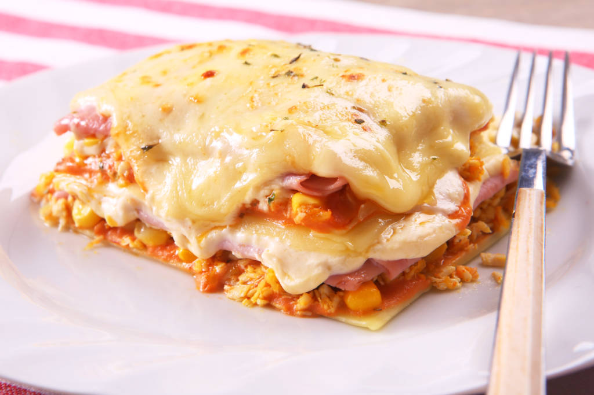
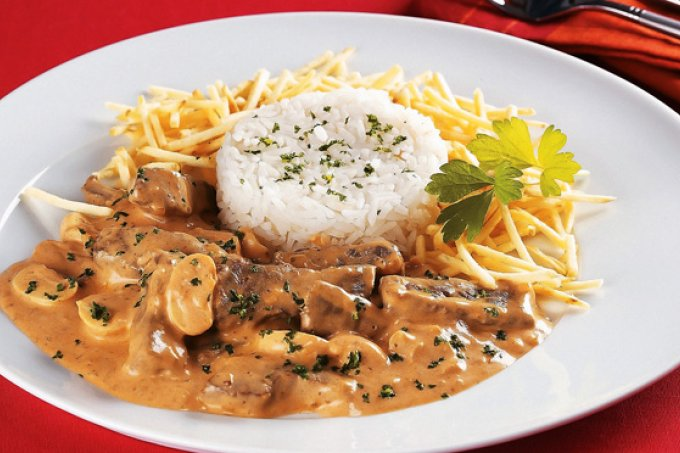

| Lasanha de Frango |
|

|
| Ingredientes |
Modo de Preparo |
| 250 g de massa para lasanha fresca pré-cozida |
Em uma panela, aqueça a margarina em fogo médio, junte o extrato, o frango, o milho verde QUERO e a salsinha e refogue por 2 minutos. Reserve. |
| 1 colher (sopa) de margarina |
| 1 colher (sopa) de extrato de tomate QUERO |
Em uma panela, aqueça a margarina, junte o leite e a amido de milho QUERO e cozinhe, mexendo sempre até encorpar. Acrescente o creme de leite, o queijo e a maionese QUERO, misturando até obter um creme homogêneo. Reserve. |
| 1 peito de frango pequeno (300g) cozido e desfiado |
| Meia xícara (chá) de milho verde QUERO escorrido |
Em uma tigela, misture o molho pronto QUERO e a maionese QUERO até ficar homogêneo. Reserve |
| 1 colher (sopa) de cheiro-verde picado |
| 300 g de presunto fatiado fino |
Preaqueça o forno em temperatura média 180°C. |
| 300 g de queijo mussarela fatiado fino |
| 1 colher (sopa) de margarina |
Em um refratário médio, monte camadas alternadas de molho vermelho, massa, frango, molho branco, presunto e queijo. Repita as camadas até finalizando com molho vermelho. |
| 1 colher (sopa) de amido de milho QUERO |
| 1 xícara (chá) de leite |
Cubra com queijo ralado e leve ao forno por 30 minutos ou até dourar e o queijo derreter. |
| 1 embalagem de creme de leite (200g) |
| 1 embalagem de queijo parmesão ralado (100g) |
| 1 xícara (chá) de maionese QUERO |
| 1 embalagem de molho de tomate QUERO sabor tradicional |
| Estrogonofe de Carne |
|

|
| Ingredientes |
Modo de Preparo |
| 1,5 kg de miolo de alcatra em bifes |
Corte os bifes em tiras (de 5 cm x 2 cm), transfira para uma tigela e mantenha em temperatura ambiente – a carne não pode estar gelada na hora de dourar. Enquanto isso, prepare os outros ingredientes. |
| 500 g de cogumelos-de-paris |
Numa tábua, corte os cogumelos-de-paris em 3 fatias e reserve (se preferir, você pode usar champignon em conserva, mas o resultado não será o mesmo). Descasque e pique fino a cebola e o alho. |
| 2 cebolas |
Leve ao fogo médio uma panela média. Quando aquecer, regue com 1 colher (sopa) de azeite e doure as tiras de carne aos poucos – se colocar todas ao mesmo tempo, elas vão soltar o próprio líquido e cozinhar no vapor, em vez de dourar. Vire com a pinça para dourar por igual. |
| 3 dentes de alho |
Transfira as tiras douradas para uma tigela. Doure o restante, sempre regando a panela com um pouco de azeite antes de cada leva. |
| 3 xícaras (chá) de creme de leite fresco (cerca de 750 ml) |
Diminua o fogo da panela para baixo e regue com mais 1 colher (sopa) de azeite. Adicione a cebola e refogue até murchar por cerca de 3 minutos, raspando bem o fundo da panela – os queimadinhos da carne vão dar sabor ao preparo. Junte o alho e mexa por apenas 1 minuto para perfumar. |
| 3 colheres (sopa) de ketchup caseiro |
Acrescente o extrato de tomate, o ketchup e mexa bem. Volte a carne dourada à panela, adicione o molho inglês e o conhaque. Junte os cogumelos e misture delicadamente. |
| 3 colheres (sopa) de molho inglês |
Regue com o creme de leite, tempere com sal e pimenta-do-reino a gosto. Misture bem e deixe cozinhar em fogo médio. Depois que começar a ferver, deixe cozinhar por mais 15 minutos, mexendo de vez em quando, até o molho engrossar. Desligue o fogo e sirva a seguir. |
| 3 colheres (sopa) de conhaque |
| 4 colheres (sopa) de azeite, sal e pimenta-do-reino moída na hora a gosto |